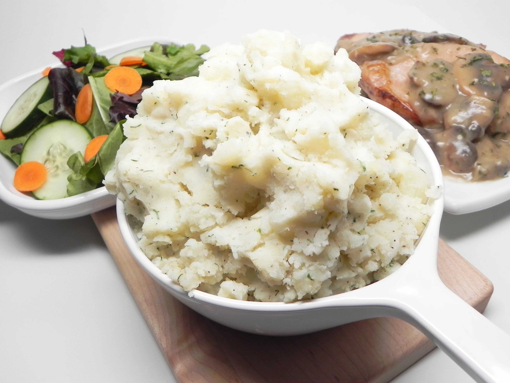

Mashed Potatoes

shitty mashed potatoes yummy!
I don't think I want to make mashed potatoes in any other way after tasting these. The dill is not overpowering at all. I might not salt the potato water next time as they were a bit saltier than I prefer. I might also add black pepper and cut back a bit on the bullion.
Ingredients
- 6 medium white potatoes, peeled
- ¾ cup buttermilk
- 3 tablespoons butter
- 2 tablespoons chicken bouillon powder
- 2 teaspoons chopped fresh dill
- salt and ground black pepper to taste
Steps
- Place potatoes into a large pot and cover with salted water; bring to a boil. Reduce heat to medium-low and simmer until tender, 20 to 30 minutes. Drain and mash in a large bowl.
- Add buttermilk, butter, bouillon powder, dill, salt, and pepper and mash until creamy.